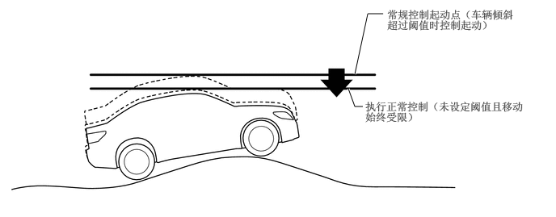
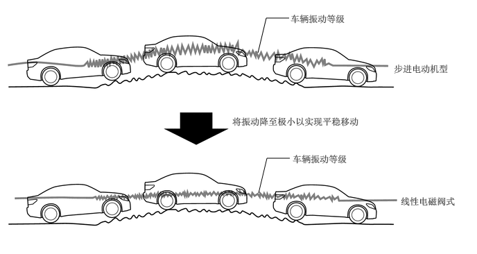

概要
采用了自适应可调悬架系统 (AVS)。
AVS 根据驾驶操作和道路状况控制减振器的减振力，从而实现卓越的转向响应性、稳定性（平稳的稳定驾驶）和稳定舒适驾乘。
线性电磁阀式减振器控制安装在减振器下方的执行器切换减振力，实现精确控制。
AVS 减振力控制系统包括根据行驶时的操作进行控制的车速感应控制、防纵倾控制、侧倾姿势控制、根据道路状况进行控制的反冲控制（簧上速度比例控制）、颠簸程度感应控制和簧下减振控制。
AVS 系统通过与制动控制系统和碰撞预测系统的协同控制优化控制减振力。
配备模式切换功能，可通过执行行驶模式选择操作选择减振力控制模式。
主要特征
AVS 系统通过引入“反冲控制（簧上速度比例控制）”来实现更高水平的平整度和乘坐舒适性，以充分利用线性电磁阀式减振力可调减振器。同时，线性电磁阀式减振力可调减振器快速平稳地执行细粒度控制以切换减振力。从而更频繁地进行控制并可进行更高频率的控制。
正常范围内的平整感
该系统使用线性电磁阀式减振力可调减振器的特性持续控制减振力，以阻止较大和较小的车辆运动。因此，系统可在大部分路面和行驶条件下确保平稳的车辆姿势。

在复杂路面上的平整感
车辆在高度变化极小的路面上行驶期间，系统利用线性电磁阀式减振力可调减振器的特性适当控制减振力。因此，即使在复杂路面（具有较大不均匀和高度变化极小的一般路面）上，通过常规的步进电动机式无法完全实现有效控制时，也可抑制较大的车辆运动并降低颠簸振动，以实现平整、平稳的乘坐舒适性。
